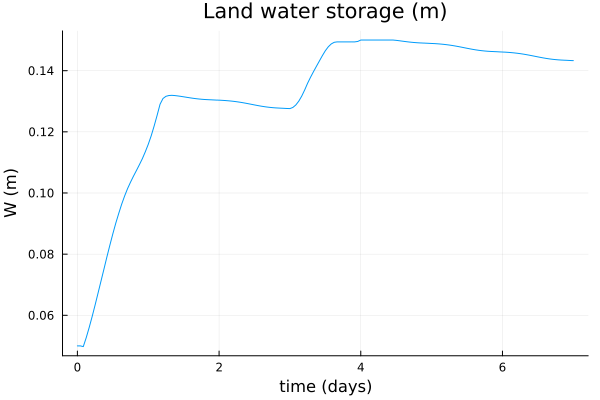
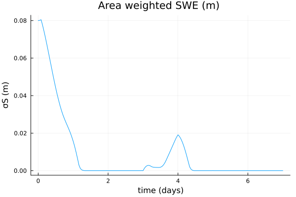
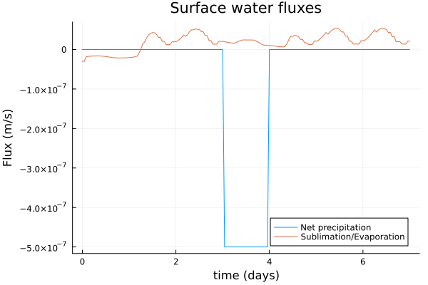
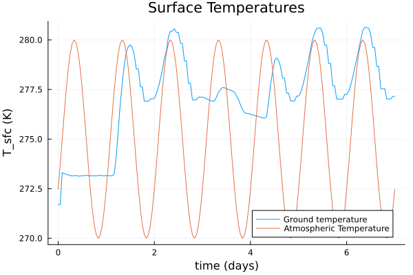
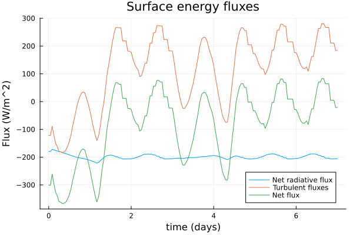

Introduction to the Land Bucket Model
The land bucket model implemented in ClimaLSM is based off of the models of Manabe (1969)[1], Milly and Shmakin (2002)[2], and the SLIM model (Laguë, Bonan, Swann 2019)[3], with small changes, as noted.
This tutorial explains in brief the core equations and the necessary parameters of the bucket model, and shows how to set up a simulation in standalone mode. More detail for coupled runs can be found in the ClimaCoupler.jl documentation and in the coupled simulation tutorial.
At each coordinate point on the surface, we solve ordinary differential equations for the subsurface water storage of land (W, m), the snow water equivalent multiplied by the snow cover fraction (σS, m), and the surface water content of land (Ws, m). We additionally solve a partial differential equation for the land temperature as a function of depth (T, K). The snow cover fraction is given by a heaviside function in the current code.
In what follows, surface fluxes over soil generally indicate fluxes over non-snow-covered regions. The exception is the albedo of vegetated and non-vegetated surfaces, for which we use the symbol α_sfc.
We have:
$\frac{d W}{dt} = I,$
$\frac{d Ws}{dt} = P_{liq} + σM - (1-σ) E_{soil} - I,$
$\frac{d σS}{dt} = P_{snow} - σ(E_{snow} + M),$
$ρc \frac{\partial T}{\partial t} = κ_{soil} \frac{\partial T}{\partial z}$
$F_{bot} = 0.0 = -κ_{soil} \frac{\partial T}{\partial z}|_{z = z_{bot}}$
$(1-σ) (R_n+ SHF + LHF)_{soil} + σG_{undersnow} = -κ_{soil} \frac{\partial T}{\partial z}|_{z = z_{sfc}}$
$G_{undersnow} = (R_n+ SHF + LHF)_{snow} - F_{intosnow}$
$F_{intosnow} = -ρ_l L_{f,0} (M+E_{snow})$
$R_n = -(1-α)*SW↓ -LW↓ + σ_{SB} T_{sfc}^4$
where the water fluxes are : I the infiltration as defined in [1], P_liq (m/s) the water volume flux of precipitation, P_snow (m/s) the water volume flux in the form of snow, (1-σ)E_soil (m/s) the water volume flux in evaporation, σE_snow the water volume flux in sublimation from snow, and σM (m/s) the water volume flux in melting of snow. The melt rate is defined via the net surface flux when surface temperatures are above freezing.
For heat fluxes, we have R_n the net radiation, SHF the sensible heat flux, LHF the latent heat flux, G_undersnow the heat flux into snow-covered soil, and F_intosnow the heat flux into the snowpack itself. Note that the water balance equation for snow is equivalent to the heat balance equation, since we neglect the sensible heat contribution and only track the latent heat contribution.
Finally, we have α_sfc(lat, lon) the (snow-free) surface albedo, ρc the volumetric heat capacity of the land, σ_SB the Stefan-Boltzmann constant, and κ_soil the thermal conductivity. The albedo is a linear interpolation between the albedo of surface and snow, as decribed in [3]. The surface temperature is taken to be equal to the temperature T at the first grid point, assumed to be the same for soil and snow. At present the snow cover fraction is a heaviside function, and only one set of surface fluxes is computed per grid point.
Turbulent surface fluxes of sensible heat, latent heat, and water vapor (SHF, LHF, E) are computed using Monin-Obukhov theory; SW↓ and LW↓ are the downward fluxes in short and long wavelength bands. We use the same roughness lengths for snow and soil. Note that with the exception of precipitation and downwelling radiation, all fluxes are defined such that positive is towards the atmosphere.
As the temperature at the surface of the soil and snow is the same, only the evaporation changes between the two surface coverage types. We have
$E_{soil} = β(W, W_f) E(q_{sat}(T_{sfc}, ρ_{sfc}; liquid),$
where β is the factor used in [1] which accounts for the fact that soil does not evaporate at the potential rate when it is not saturated. This makes use of the field capacity parameter W_f. We also have
$E_{snow} = E(q_{sat}(T_{sfc}, ρ_{sfc}; ice).$
Simulating a standalone bucket model
First, we need to import necessary packages. We use OrdinaryDiffEq.jl for the timestepping, and DiffEqCallbacks.jl is used as described below, for accessing the solver state during the integration.
using OrdinaryDiffEq: ODEProblem, solve, Midpoint
using DiffEqCallbacksWe use ClimaCore for setting up the domain/coordinate points. While this infrastructure isn't really necessary for standalone simulations, adhering to it makes setting up coupled simulations very easy. It also is nice to rely on ClimaCore utilities because they have been designed in advance for running distributed simulations.
using ClimaCoreWe also use CLIMAParameters, which strives to ensure a common set of parameters across all Clima models, and to make parameter estimation more seamless.
import CLIMAParameters as CPLastly, let's bring in the bucket model types (from ClimaLSM) that we will need access to.
using ClimaLSM.Bucket:
BucketModel,
BucketModelParameters,
PrescribedAtmosphere,
PrescribedRadiativeFluxes,
BulkAlbedoFunction
using ClimaLSM.Domains: coordinates, LSMSingleColumnDomain
using ClimaLSM:
initialize, make_update_aux, make_ode_function, make_set_initial_aux_stateWe also want to plot the solution
using Plots
FT = Float64;As mentioned we use CLIMAParameters for earth parameters that are required across models (e.g. the density of water and ice, the latent heat of fusion at a reference temperature, etc). The land model requires additional parameters as described in the text above. These two sets are combined in the object BucketModelParameters as follows:
import ClimaLSM
include(joinpath(pkgdir(ClimaLSM), "parameters", "create_parameters.jl"));
earth_param_set = create_lsm_parameters(FT);Define our BulkAlbedoFunction model using a constant surface and snow albedo: The surface albedo is a function of coordinates, which would be (x,y) on a plane, and (lat,lon) on a sphere. Another albedo option is to specify a BulkAlbedoMap, which uses a NetCDF file to read in surface albedo. This option only applies when coordinates are (lat,lon).
α_sfc = (coordinate_point) -> FT(0.2);
α_snow = FT(0.8);
albedo = BulkAlbedoFunction{FT}(α_snow, α_sfc);The critical snow level setting the scale for when we interpolate between snow and surface albedo
σS_c = FT(0.2);The field capacity of the soil
W_f = FT(0.15);Roughness lengths (meters)
z_0m = FT(1e-2);
z_0b = FT(1e-3);Thermal parameters of soil
κ_soil = FT(0.7);
ρc_soil = FT(2e6);
Δt = FT(3600.0);
bucket_parameters = BucketModelParameters(
κ_soil,
ρc_soil,
albedo,
σS_c,
W_f,
z_0m,
z_0b,
Δt,
earth_param_set,
);Set up the model domain. At every surface coordinate point, we'll solve an ODE for W and Ws, and for every subsurface point, we solve for T. In coupled simulations run at the same resolution as the atmosphere, the bucket horizontal resolution would match the horizontal resolution at the lowest level of the atmosphere model. In general, however, the two resolutions do not need to match. Here we just set up something simple - an LSMSingleColumnDomain, consisting of a single column.
soil_depth = FT(3.5);
bucket_domain =
LSMSingleColumnDomain(; zlim = (-soil_depth, 0.0), nelements = 10);To drive the system in standalone mode, the user must provide prescribed functions of time for the water volume flux in precipitation, for the net downward shortwave and longwave radiative energy fluxes (SW↓, LW↓, W/m^2), for the atmospheric temperature T_a, wind speed u_a (m/s), specific humidity q_a, and air density ρ_a (kg/m^3) at a reference height h_a (m), as well as for the air density ρ_sfc (kg/m^3) at the surface of the earth.
Here we define the model drivers, starting with downward radiation.
SW_d = (t) -> eltype(t)(300);
LW_d = (t) -> eltype(t)(300);
bucket_rad = PrescribedRadiativeFluxes(FT, SW_d, LW_d);Prescribed atmospheric variables
Stochastic precipitation:
precip = (t) -> eltype(t)(0);
snow_precip = (t) -> eltype(t)(5e-7 * (t > 3 * 86400) * (t < 4 * 86400));Diurnal temperature variations:
T_atmos = (t) -> eltype(t)(275.0 + 5.0 * sin(2.0 * π * t / 86400 + 7200));Constant otherwise:
u_atmos = (t) -> eltype(t)(3.0);
q_atmos = (t) -> eltype(t)(0.005);
h_atmos = FT(2);
ρ_atmos = (t) -> eltype(t)(1.13);
ρ_sfc = FT(1.15);
bucket_atmos = PrescribedAtmosphere(
precip,
snow_precip,
T_atmos,
u_atmos,
q_atmos,
ρ_atmos,
h_atmos,
ρ_sfc,
);Then, we create the model object, which contains the drivers, parameters, domain, and is associated with the correct differential equations for the bucket model:
model = BucketModel(
parameters = bucket_parameters,
domain = bucket_domain,
atmosphere = bucket_atmos,
radiation = bucket_rad,
);Note the holder structs for the radiation and atmosphere functions: they are named Prescribed. In coupled simulations, we would use a different type and rely on multiple dispatch to obtain the atmospheric and radiative quantitites from the coupler.
Like all ClimaLSM models, we set up the state vector using initialize:
Y, p, coords = initialize(model);We can inspect the prognostic and auxiliary variables of the model:
ClimaLSM.prognostic_vars(model)
Y.bucket |> propertynames(:W, :Ws, :σS, :T)The auxiliary variables in this case are the surface temperature, the turbulent fluxes, the net radiation, and the surface specific humidity.
ClimaLSM.auxiliary_vars(model)
p.bucket |> propertynames(:q_sfc, :evaporation, :turbulent_energy_flux, :R_n, :T_sfc, :α_sfc)Next is to set initial conditions.
Y.bucket.T .= FT(270);
Y.bucket.W .= FT(0.05);
Y.bucket.Ws .= FT(0.0);
Y.bucket.σS .= FT(0.08);We also initialize the auxiliary state here:
t0 = FT(0.0);
set_initial_aux_state! = make_set_initial_aux_state(model);
set_initial_aux_state!(p, Y, t0);Then to create the entire right hand side function for the system of ordinary differential equations:
ode_function! = make_ode_function(model);Then we can set up the simulation and solve it:
tf = FT(7 * 86400);
prob = ODEProblem(ode_function!, Y, (t0, tf), p);We need a callback to get and store the auxiliary fields, as they are not stored by default.
saved_values = SavedValues(FT, ClimaCore.Fields.FieldVector);
cb = SavingCallback(
(u, t, integrator) -> copy(integrator.p),
saved_values;
saveat = 0:Δt:tf,
);
sol = solve(prob, Midpoint(); dt = Δt, saveat = 0:Δt:tf, callback = cb);Extracting the solution from what is returned by the ODE.jl commands is a bit clunky right now, but we are working on hiding some of this. parent extracts the underlying data from the fields stored in the ClimaCore.Fields.FieldVector, and we loop over the solution sol because of how the data is stored within solutions returned by ODE.jl - indexed by timestep.
W = [parent(sol.u[k].bucket.W)[1] for k in 1:length(sol.t)];
Ws = [parent(sol.u[k].bucket.Ws)[1] for k in 1:length(sol.t)];
σS = [parent(sol.u[k].bucket.σS)[1] for k in 1:length(sol.t)];
T_sfc =
[parent(saved_values.saveval[k].bucket.T_sfc)[1] for k in 1:length(sol.t)];
evaporation = [
parent(saved_values.saveval[k].bucket.evaporation)[1] for
k in 1:length(sol.t)
];
R_n = [parent(saved_values.saveval[k].bucket.R_n)[1] for k in 1:length(sol.t)];The turbulent energy flux is the sum of latent and sensible heat fluxes.
turbulent_energy_flux = [
parent(saved_values.saveval[k].bucket.turbulent_energy_flux)[1] for
k in 1:length(sol.t)
];
plot(
sol.t ./ 86400,
W,
label = "",
xlabel = "time (days)",
ylabel = "W (m)",
title = "Land water storage (m)",
)
savefig("w.png")"/home/runner/work/ClimaLSM.jl/ClimaLSM.jl/docs/src/generated/Bucket/w.png"
plot(
sol.t ./ 86400,
σS,
label = "",
xlabel = "time (days)",
ylabel = "σS (m)",
title = "Area weighted SWE (m) ",
)
savefig("swe.png")"/home/runner/work/ClimaLSM.jl/ClimaLSM.jl/docs/src/generated/Bucket/swe.png"
plot(
sol.t ./ 86400,
-snow_precip.(sol.t),
label = "Net precipitation",
xlabel = "time (days)",
ylabel = "Flux (m/s)",
title = "Surface water fluxes",
legend = :bottomright,
)
plot!(sol.t ./ 86400, evaporation, label = "Sublimation/Evaporation")
savefig("water_f.png")"/home/runner/work/ClimaLSM.jl/ClimaLSM.jl/docs/src/generated/Bucket/water_f.png"
plot(
sol.t ./ 86400,
T_sfc,
title = "Surface Temperatures",
label = "Ground temperature",
xlabel = "time (days)",
ylabel = "T_sfc (K)",
legend = :bottomright,
)
plot!(sol.t ./ 86400, T_atmos.(sol.t), label = "Atmospheric Temperature")
savefig("t.png")"/home/runner/work/ClimaLSM.jl/ClimaLSM.jl/docs/src/generated/Bucket/t.png"
plot(
sol.t ./ 86400,
R_n,
label = "Net radiative flux",
xlabel = "time (days)",
ylabel = "Flux (W/m^2)",
title = "Surface energy fluxes",
legend = :bottomright,
)
plot!(sol.t ./ 86400, turbulent_energy_flux, label = "Turbulent fluxes")
plot!(sol.t ./ 86400, R_n .+ turbulent_energy_flux, label = "Net flux")
savefig("energy_f.png")"/home/runner/work/ClimaLSM.jl/ClimaLSM.jl/docs/src/generated/Bucket/energy_f.png"
References
[1] Manabe, S. (1969) CLIMATE AND THE OCEAN CIRCULATION I: The Atmospheric Circulation and the Hydrology of the Earth's Surface. Monthly Weather Review, Volume 97: Issue 11, p 739-774. [2] Milly, P. C. D. and Shmakin, A.B. (2002) Global Modeling of Land Water and Energy Balances. Part I: The Land Dynamics (LaD) Model Journal of Hydrometeorology, Volume 3: Issue 3, p 283-299. [3] Laguë, M., Bonan, G., and Swann, A. (2019) Seperating the Impact of Individual Land Surface Properties on the Terrestrial Surface Energy Budget in both the Coupled and Uncoupled Land-Atmosphere System Volume 32: Issue 18, p 5725-5744
This page was generated using Literate.jl.